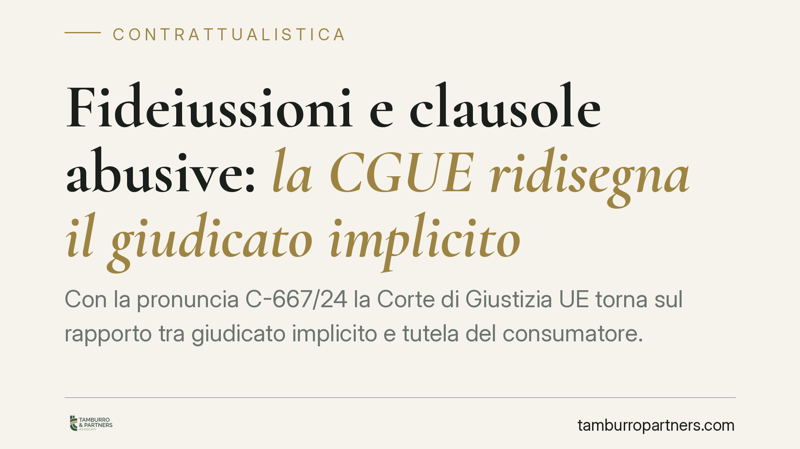

Fideiussioni e clausole abusive: la CGUE ridisegna il giudicato implicito
Con la pronuncia C-667/24 la Corte di Giustizia UE torna sul rapporto tra giudicato implicito e tutela del consumatore. Il principio: il giudice deve poter verificare l'abusività delle clausole a favore del fideiussore consumatore, anche nell'opposizione a decreto ingiuntivo. Si attende ora la Cassazione. Un tema che incide su molte garanzie bancarie.

Il fatto
La Corte di Giustizia UE, con la sentenza nella causa C-667/24, originata da un rinvio del Tribunale di Napoli, è tornata su una questione ricorrente nel contenzioso bancario: può il cosiddetto giudicato implicito impedire al giudice di esaminare l'eventuale carattere abusivo delle clausole contenute in un contratto di fideiussione stipulato da un consumatore?
La risposta della Corte è negativa. Il controllo sulle clausole abusive, previsto dalla normativa europea a tutela del consumatore, non può essere sacrificato sull'altare di una preclusione processuale che si forma "in silenzio", cioè senza che il tema sia mai stato effettivamente discusso e deciso.
Inquadramento normativo
Il riferimento è la Direttiva 93/13/CEE sulle clausole abusive nei contratti con i consumatori. L'articolo 6 impone che le clausole abusive non vincolino il consumatore; l'articolo 7 chiede agli Stati di predisporre mezzi adeguati ed efficaci per farle cessare.
Su questa base la Corte di Giustizia ha progressivamente affermato un principio cardine: il giudice nazionale deve rilevare d'ufficio l'abusività di una clausola, ogni volta che dispone degli elementi di fatto e di diritto necessari. Si tratta di un controllo che prescinde dall'iniziativa della parte, proprio perché il consumatore è considerato in posizione di debolezza rispetto al professionista.
Il giudicato implicito è invece una costruzione del diritto processuale interno: quando una domanda viene accolta, si considerano "coperte" dalla decisione anche le questioni presupposte, pur non espressamente trattate. Nel caso del decreto ingiuntivo non opposto, o opposto solo su altri profili, si sostiene che il giudice abbia implicitamente ritenuto valido il titolo. La CGUE chiarisce che questa logica non può spingersi fino a precludere, in via definitiva, il controllo sull'abusività mai realmente effettuato.
Perché riguarda anche il fideiussore
Un passaggio rilevante è l'estensione della tutela al fideiussore consumatore. La fideiussione è la garanzia con cui un soggetto si obbliga a pagare il debito altrui se il debitore principale non adempie. Chi la presta può qualificarsi come consumatore quando agisce per finalità estranee alla propria attività professionale.
In tali casi, il fideiussore gode delle stesse protezioni riconosciute al consumatore "diretto". Significa che, nel giudizio di opposizione a decreto ingiuntivo promosso dalla banca, può far valere l'abusività delle clausole del contratto di garanzia, senza che una precedente pronuncia non espressa sul punto gli sbarri la strada.
Implicazioni pratiche
Per chi ha prestato una fideiussione a condizioni squilibrate, la decisione apre spazi di difesa che in passato apparivano chiusi. Il controllo sull'abusività torna possibile anche quando il titolo esecutivo sembrava ormai consolidato.
Per gli istituti di credito, il messaggio è di segno opposto: la mera formazione di un giudicato implicito non mette al riparo da una successiva verifica delle clausole, con potenziali effetti sulla stabilità delle garanzie già escusse o in corso di escussione.
Resta un elemento di incertezza. La Corte di Cassazione è attesa su un tema contiguo, e il coordinamento tra diritto europeo e preclusioni processuali interne non è ancora pienamente definito. Consigliamo quindi prudenza nel trarre conclusioni generalizzate prima degli ulteriori chiarimenti.
Cosa fare in concreto
- Verifica la tua qualifica: accerta se, al momento della firma, hai agito come consumatore e non per ragioni professionali o imprenditoriali.
- Recupera il contratto di fideiussione e tutta la documentazione bancaria collegata, comprese eventuali condizioni generali richiamate.
- Controlla i termini processuali: se hai ricevuto un decreto ingiuntivo, i tempi per opporti sono stringenti e decadenziali.
- Fai esaminare le clausole sotto il profilo dell'abusività, con particolare attenzione a quelle che aggravano la posizione del garante.
- Non dare per persa una garanzia già azionata senza una valutazione tecnica aggiornata alla luce della pronuncia europea.
Conclusione
La pronuncia conferma la direzione di una giurisprudenza europea che privilegia l'effettività della tutela del consumatore rispetto a rigidità processuali formali. Il punto di equilibrio con il nostro ordinamento sarà precisato dalla Cassazione: fino ad allora, ogni posizione va valutata caso per caso.
Contributo informativo a cura di Tamburro & Partners - Avv. Giuseppe Tamburro. Non costituisce parere legale.
Ogni contratto ha il suo equilibrio.
Se vuoi una revisione delle clausole o una redazione su misura, scrivi allo studio. Ti rispondiamo entro un giorno lavorativo.